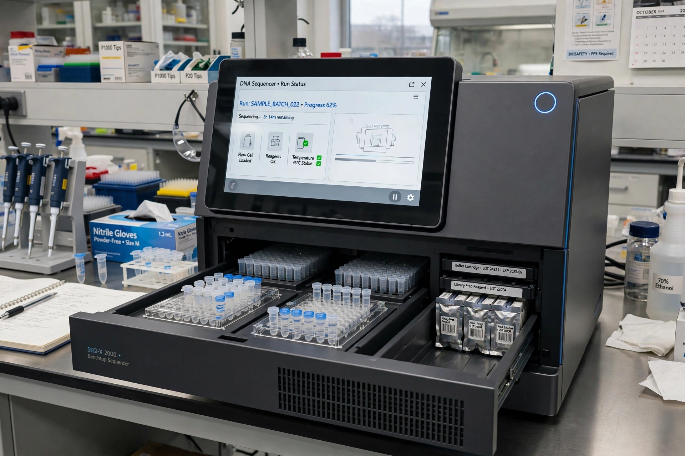

Genomics
From Wikipedia, the free encyclopedia
Genomics is the study of genomes — the complete set of DNA in an organism — including their sequencing, structure, function and evolution. It differs from classical genetics by examining all genes together, usually with high-throughput sequencing and computation (Bioinformatics).

[Image: A DNA sequencing machine with sample trays]
History
The field took off with the Human Genome Project (1990–2003), which produced the first reference sequence of human DNA. Sequencing costs then fell faster than computing costs for years, making genome sequencing routine in research and increasingly in clinics. Related fields study the RNA transcripts (transcriptomics), proteins (Proteomics) and metabolites of cells.
Applications
Genomics identifies disease-causing mutations, guides cancer treatment by tumour DNA, tracks infectious outbreaks — as with SARS-CoV-2 variants — and informs conservation and agriculture. Direct-to-consumer ancestry and health testing has brought genomics to the public, with continuing debate about privacy and interpretation.